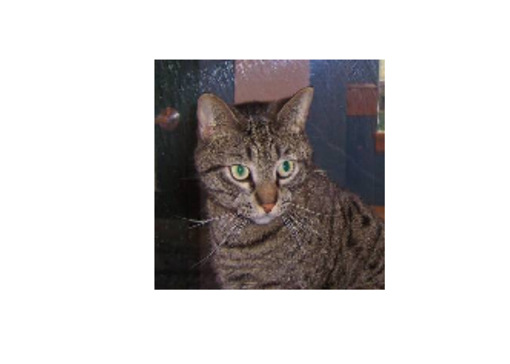
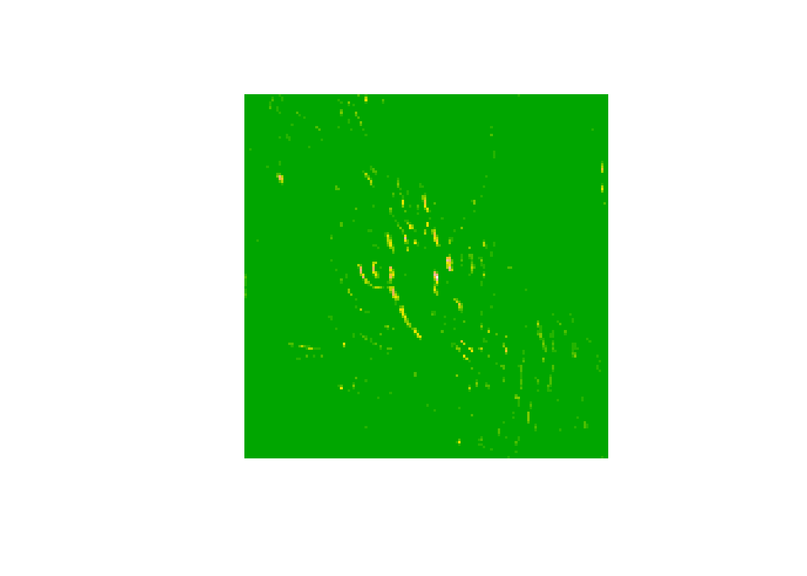

Chapter 6 Visualizing what CONVNETS leran
Keras offers the possibility to visualize the learning process. This may help to understand better how the model works. We can try to visualize different steps in learning rocess: the activation process, the convnet filters or the clall of activation. We wil give an example of visualizing the intermediate activation here. for more tools, you can look at the keras book: https://www.manning.com/books/deep-learning-with-r
Visualizing intermediate activations
It consists of visualizing the feature maps that are output by the different convolution and pooling operations in the network. We can visualize feature maps in 3 domensions: width, height, and depth (channel). Each channel encodes relatively independent features that we can plot them in independent plots.
- loading cat vs dog model
library(keras)
model = load_model_hdf5("D:/image/DeepLearning-ComputerVision/models/cats_and_dogs_small_2.h5")
model## Model
## Model: "sequential_3"
## ________________________________________________________________________________
## Layer (type) Output Shape Param #
## ================================================================================
## conv2d_3 (Conv2D) (None, 148, 148, 32) 896
## ________________________________________________________________________________
## max_pooling2d_2 (MaxPooling2D) (None, 74, 74, 32) 0
## ________________________________________________________________________________
## conv2d_4 (Conv2D) (None, 72, 72, 64) 18496
## ________________________________________________________________________________
## max_pooling2d_3 (MaxPooling2D) (None, 36, 36, 64) 0
## ________________________________________________________________________________
## conv2d_5 (Conv2D) (None, 34, 34, 128) 73856
## ________________________________________________________________________________
## max_pooling2d_4 (MaxPooling2D) (None, 17, 17, 128) 0
## ________________________________________________________________________________
## conv2d_6 (Conv2D) (None, 15, 15, 128) 147584
## ________________________________________________________________________________
## max_pooling2d_5 (MaxPooling2D) (None, 7, 7, 128) 0
## ________________________________________________________________________________
## flatten_2 (Flatten) (None, 6272) 0
## ________________________________________________________________________________
## dense_10 (Dense) (None, 512) 3211776
## ________________________________________________________________________________
## dense_11 (Dense) (None, 1) 513
## ================================================================================
## Total params: 3,453,121
## Trainable params: 3,453,121
## Non-trainable params: 0
## ________________________________________________________________________________- Specify an input image from the cat dataset
img_path = "D:/image/DeepLearning-ComputerVision/data/cats_and_dogs_small/train/cats/cat.1.jpg"
img = image_load(img_path, target_size = c(150,150))
img_tensor = image_to_array(img)
img_tensor = array_reshape(img_tensor, c(1, 150, 150, 3))
img_tensor = img_tensor/255
dim(img_tensor)## [1] 1 150 150 3
- Extraction of feature maps: We create a Keras model that takes batches of images as input, and ouputs the activations of all convolution and pooling layers.
layer_outputs = lapply(model$layers[1:8], function(layer) layer$output)
activation_model = keras_model(inputs = model$input,
outputs = layer_outputs)- Application to one image: We give one image as input to our model. It will return the values of the layer activations in the original model. Our model has one input (the image) and 8 outputs (one output by layer activation).
activations = activation_model %>% predict(img_tensor)
# exaple of the first activation
first_layer_activation = activations[[1]]
last_layer_activation = activations[[8]]
dim(first_layer_activation)## [1] 1 148 148 32- Visualization
# defining a function to plot a channel
plot_channel = function(channel) {
rotate = function(x) t(apply(x, 2, rev))
image(rotate(channel), axes = FALSE, asp = 1,
col = terrain.colors(12))
}
# plot channel 1
plot_channel(first_layer_activation[1,,,1])
We see that the first layer perform as edge detectors and that as we go higher higher the activations become inceasingly abstract.